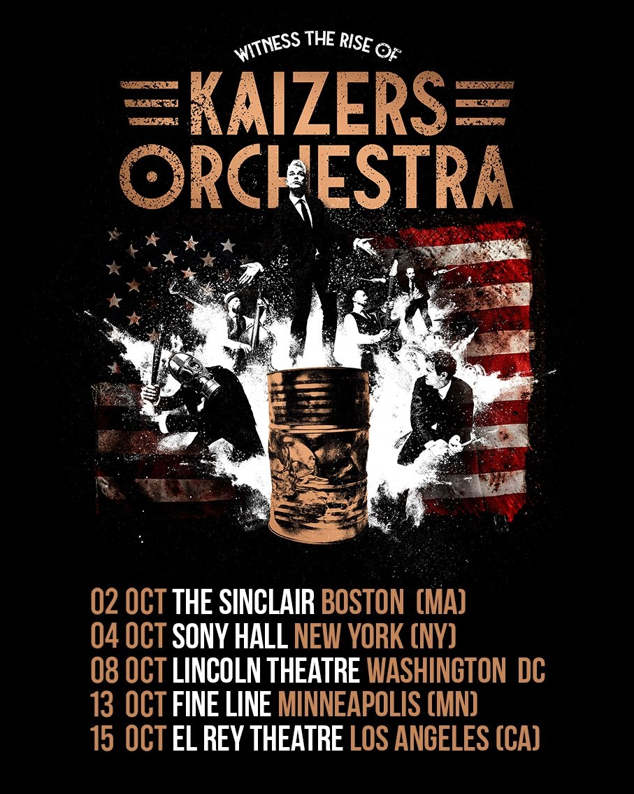
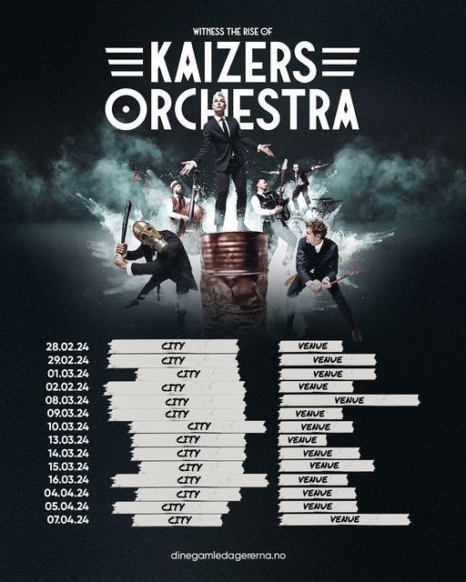
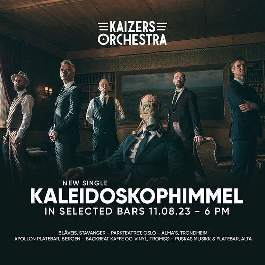
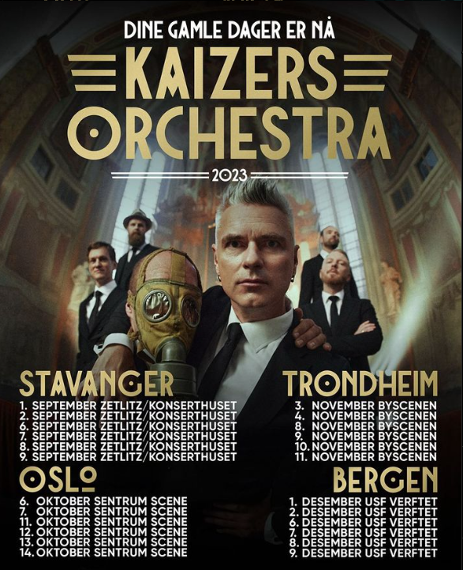

Opdateringer & Siste nytt
Special message to the people in America!
05.08.24
A special message to our extended Kaizer family members in America from Kaizers Orchestra themselves!
Popup konsert i Bergen!
12.06.24
Fansen fikk bli med på en veldig intim, hemmelig gratiskonsert den 12 juni. De som hadde signet seg opp på dinegamledagererna.no fikk seg en overraskelse den 12. juni. De fikk en melding med en link til å skaffe seg gratisbilletter til konserten. Billettene ble revet bort på bare 12 sekunder!
Setlist
KGB
Prosessen
Tokyo ice til Clementine
Dine gamle dager er nå
Bris
170
Girls just want to have fun
Hjerteknuser
Bilde: Bergen Tidende
Første festival i Norge på 10 år
7.06.24
Etter 10 år med venting er Kaizers klar til å ta festivalsommeren med storm. 7. juni skjer det. Etter at bandet har tyvstartet i Danmark dagen før er Kaizers klare for vaulen. Les mer om festivalen her.
Bilde: Stavanger Aftenblad
USA turné
11.05.24
Fansen hadde mangen spekulasjoner. Noen venues hadde lagt ut på Twitter at Kaizers Orchestra skulle komme til dem i USA. Den 11. mai annonerte banden på facebook at ryktene var sanne. Oktober 2024 skal Kaizers Orchestra på sin første turné i USA.
Europaturnéen er klar!
13.09.23
Da er alle alle datoene fremme og Kaizers Orchestra er klare for Europa. Billetter i salg 21 september.
Presale: dinegamledagererna.no
Kaizers United: Offisiell etterfest
03.09.23
Kaizers Orchestra skal kjøre en offisiell etterfest i hver by som de skal spille konserter i til høsten. Det blir DJ og Kaizers karokeshow. Billetene kommer i salg mandag klokken 12 på dinegamledagererna.no/etterfest

Europaturné!
29.08.23
Kaizers skal til Europa og skal totalt spille 14 show. Hver dag vil Kaizers annonsere en ny venue på kaizers.no, men hvis du finner ut hvor kan du få opp til 4 billetter til det showet. Det vil komme hint og en daglig kode på dinegamledagererna.no. Den første som tar bilde av venuen med riktig kode og tagger Kaizers Orchestra på Instagram vil vinne biletter til det showet.
Pop-upbutikk i Stavanger
28.08.23
Resistansen Kaizermerch & mer er Kaizers pop-up butikk i Stavanger. Det skal være en plass der fans kan møte opp før konserter, kjøpe merch, snakke eller å ta seg en kaffe. Dørene åpner 17:00 på torsdag, ellers blir åpningstidene 12-19 på konsertdagene.
Mer info
Resistansens Insta
Kaleidoskophimmel er ute!
18.08.23
Kaleidoskophimmel, er en nyttårsfortelling om forelskelse. Den er nå ute over alt!
Ny singel
10.08.23
Kaleidoskophimmel slippes 18. august, men kan høres på utvalgte barer og møteplasser fra 18:00 imorgen. Sangen er en nyttårsfortelling om forelskelse.
Dine Gamle Dager Er Nå
13.06.23
På fredag kommer den første låta fra bandet på ti år. Sign deg up på dinegamledagererna.no for å få høre låta litt tidligere.
Ny låt kommer
8.06.23
"Det var en særdeles inspirerende oppgave å komponere og spille inn den første låten til Kaizers Orchestra på over ti år!"
-Kaizers Orchestra
Ting skjer...
2.06.23
Dine Gamle Dager Er Nå
I studio
26.04.23
Kaizers Orchestra har vært i studio og spilt inn ny musikk!! Da er det bare å vente på singnal...
Vinylfest!
26.01.23
Kaizers Orchestra gjenutgir hele katalogen på venyl i løpet av halvåret. Bortsett fra "Ompa til du dør" som fikk en tyvstart i 2021 under sitt 20 år jubileum.
Albumene er trykket på T-Time Vinyl Plant i Stavaner og kommer i to versjoner. En standar 180 grams svart vinyl og en limited edition farget vinyl som kommer i et oppslag av 1000 eksemplarer.
Forhondssalg starter på fredag 27. januar kl 10.
Utgivelsesdatoer:
Evig Pint (24/2)
Maestro (24/3)
Maskineri (21/4)
Violeta Violeta Volume I (26/5)
Violeta Violeta Volume II (23/6)
Violeta Violeta Volume III (25/8)
Flere billetter
11.11.22
Nå kom den aller siste dosen med konserter. Hele 56 totalt.
Billetter i salg 11:11 her.
Kaizers Orchestra er tilbake!!!
9.11.22
Billetter i salg 11.11 11:11
Dine gamle dager er nå
7.11.22
En video har dukket opp på Kaizers youtube kanal som sier Dine gamle dager er nå. Det matcher med denne instakontoen som har fått hint på hint helt siden 26. oktober. Er Kaizers tilbake!!??
Kaizers donerer gammel merch
26.10.22
Kaizers Orchestra har donert mangen gamle t-shirts til fretex.
Mystisk video
28.09.22
Enda en melding har dukket opp på Kaizers.no:
"En ny mystisk forsendelse...
Denne gang dreier det seg om en spilldåse, med en melodisnutt titulert "Dine gamle dager er nå". Snutten varer i ca et halvt minutt og selv om ingen i bandet kan identifisere melodien, er det enighet om at den unektelig har et Kaizersk preg over seg.
- Vi klør oss litt i hodet akkurat nå, men det er en fin melodi, sier frontmann Janove Kaizer i en knapp kommentar til Kaizers.no
- Kan dere si noe om hvor denne spilldåsen stammer fra?
- Hm, nei. Faktum er at den en dag bare stod der. Ingen vet hva eller hvor den kommer fra.
Vi kommer tilbake med oppdateringer hvis ytterligere utvikling forekommer."
Hva skjer?!
5.09.22
Denne meldingen kom opp på Kaizers.no:
Krigen er ikke over
"Et telegram har kommet
Kaizers Orchestra rapporterer til Kaizers.no at et telegram er mottatt. Telegrammet består av fire setninger skrevet på kyrillisk, og etter nærmere etterforskning og konsultasjon har vi fått følgende oversettelse av de fire setningene:
"Ligg lavt. Stopp.
Tenk stort. Stopp
Drøm hardt. Stopp
Avvent ordre. Stopp"
Det er foreløpig uklart hva det refereres til og hvorfor telegrammet har dukket opp. Vi oppdaterer så snart vi vet mer."